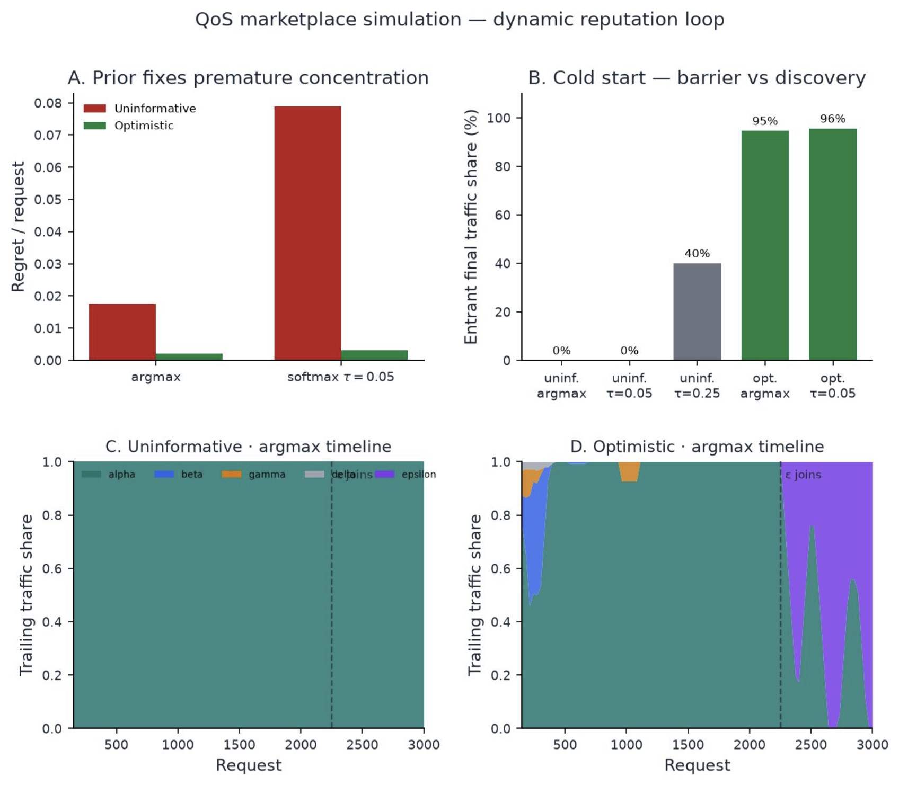

Can one orchestrator tool route a request to the right capability without loading every MCP tool schema into the model's context? A 505-query benchmark, with the vectors and code to answer it offline.
Accompanies Scalable Semantic Routing and QoS-Aware Provider Selection for MCP Agents. Amritansh Mishra, Yash Panditrao, Shlok Parab, Achintya Sharma, Payal Mishra, Ishani Saha. International Conference on Machine Learning and Data Engineering (ICMLDE), Procedia Computer Science, 2026.
101semantic operations 18synthetic MCP servers 505hand-authored queries 606indexed examples 24compound requests
Each method must name the single correct operation for a request. Flat dense retrieval over one vector per operation is the baseline; every other row is scored on the same queries with a paired comparison against it. Hard hierarchical gating leaves the correct operation unreachable for 51 of 505 queries, and no lexical or hybrid variant significantly improves on the dense index.
| Method | Top-1 | 95% CI | Reproduce with |
|---|---|---|---|
| BM25k1 = 1.5, b = 0.75 | 62.97% | 58.7 – 67.1 | research.lexical_hybrid |
| Reciprocal rank fusionBM25 + dense top-5 lists, k = 60 | 86.93% | 83.7 – 89.6 | research.lexical_hybrid |
| Hard class-gated hierarchybeam 1, same vectors | 87.13% | — | hierarchy_experiment |
| Flat dense retrievalone vector per operation, FAISS | 95.64% | 93.5 – 97.1 | hierarchy_experiment |
| Score interpolationdense weight αh = 0.7 | 95.84% | 93.7 – 97.3 | research.lexical_hybrid |
| Multi-vector5-fold cross-validated | 97.62% | 95.9 – 98.6 | research.tune_blend |
| Jev 1.13 decision modelall 101 descriptions as criteria | 97.82% | 96.1 – 98.8 | jev_comparison |
| Generation selectorover the flat top 5 | 98.02% | 96.4 – 98.9 | research.recovery |
Top-3 recall of the dense baseline is 99.60%. For 23 of 24 compound requests, a single embedding places every constituent operation within its top 10. On three matched compound requests, counting every prompt on both paths, routing used 5.3× fewer prompt tokens than an eager agent loading all 101 schemas (4.0–9.4× per request). These are operation-routing and cost results, not end-to-end task success. Scripts are modules under benchmark/; the README states for each table whether it reproduces offline, ships with run logs, or must be re-run with an API key.
Once the operation is fixed, a QoS stage allocates traffic among the providers that implement it. The simulation below removes the oracle: four providers start from identical profiles and quality is learned only from sampled executions. Winner-take-all allocation never samples a new, better provider under an uninformative prior; optimistic initialisation discovers it and routes 95–96% of traffic to it.

python -m benchmark.research.qos_dynamic --experiment all and plot_qos_dynamic.Python 3.11 or newer. Every command below runs from the shipped embedding caches and needs no API key; the README maps each table of the paper to the command that regenerates it.
git clone https://github.com/amrittmishra/mcp-semantic-tool-routing-benchmark
cd mcp-semantic-tool-routing-benchmark
python -m venv .venv && . .venv/bin/activate
pip install -r requirements.txt
export PYTHONPATH=.
python -m benchmark.hierarchy_experiment # Tables 1–2: flat vs. hierarchical
python -m benchmark.research.lexical_hybrid # Table 5: BM25, RRF, interpolation
python -m benchmark.research.tune_blend # multi-vector cross-validation
python -m benchmark.research.qos_dynamic --experiment all| File | Rows | Contents |
|---|---|---|
servers.csv | 18 | One row per downstream synthetic MCP server |
tools.csv | 101 | One row per semantic operation, with taxonomy class and type, description, and input schema |
queries.csv | 505 | Hand-authored routing queries with gold operation, tool and server labels |
tool_examples.csv | 606 | Positive and negative example phrasings used in the indexed documents |
tool_parameters.csv | 160 | Flattened input-schema parameters |
The authors wrote the queries after the registry was fixed. Two coincide with a positive example up to capitalisation and one differs by a single word; all three are routed correctly by every method. The catalogue is synthetic and English-only, and the repository's dataset card lists intended uses and limitations. The repository also ships the rebuilt FAISS index, the query, example and compound-request vectors, and the saved outputs of every model run.
@inproceedings{mishra2026routing,
title = {Scalable Semantic Routing and QoS-Aware
Provider Selection for MCP Agents},
author = {Mishra, Amritansh and Panditrao, Yash and
Parab, Shlok and Sharma, Achintya and
Mishra, Payal and Saha, Ishani},
booktitle = {Procedia Computer Science, International
Conference on Machine Learning and Data
Engineering (ICMLDE)},
year = {2026}
}Code is released under the MIT License; the dataset, registry and saved query and result files under CC BY 4.0. Machine-readable citation metadata is in CITATION.cff.
Questions and corrections: open an issue on the GitHub repository.